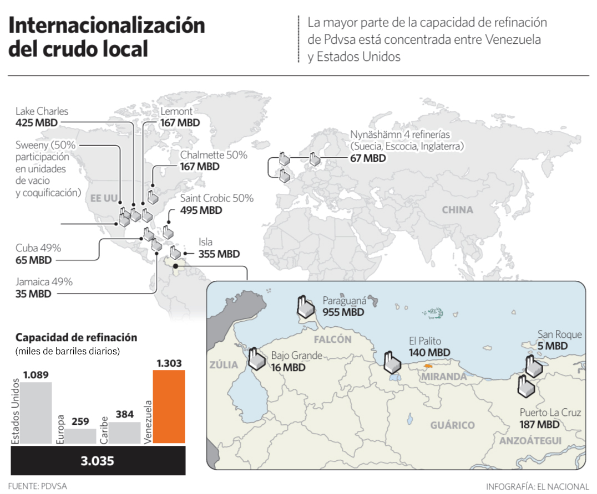

Internacionalización del crudo local
Editorial Infographic / Energy Data VisualizationContext
This infographic explains the global refining network associated with Venezuela’s state oil company PDVSA. During this period, the company operated or held stakes in several refineries outside Venezuela, particularly in the United States, the Caribbean and Europe.
The goal of the graphic was to show how Venezuelan crude was processed not only domestically but also through an international refining network.
Challenge
The information combined geographical distribution, industrial infrastructure and production capacity. The main challenge was to present a global system of refineries while maintaining clarity and scale for both international locations and domestic facilities.
Design Approach
The infographic uses a multi-scale map structure. A global map shows refineries outside Venezuela where PDVSA held participation, while a zoomed inset highlights the main refining complexes within the country.
Industrial icons are used to represent refinery locations, while numeric labels communicate refining capacity in thousand barrels per day. This separation between location and magnitude keeps the map visually clean and readable.
Information Structure
The layout organizes the information into three layers: international refining locations, domestic refining infrastructure, and a summary comparison of refining capacity by region. This structure allows readers to understand both the geographic distribution of refineries and their relative contribution to the total refining system.
